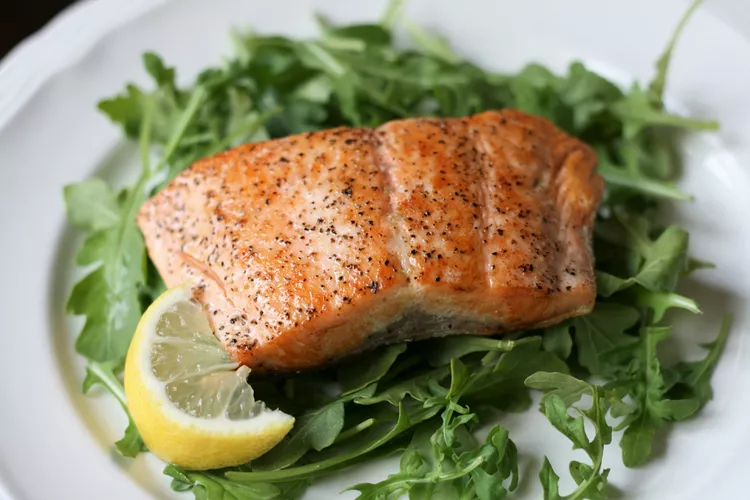

Fried salmon

Description
Interested in a fancy dish? Look no further, salmon is your fish!
Ingredients
- salmon fillet
- butter
- lemon juice
- dried dill
- garlic powder
- salt and pepper
Steps
- Mix butter and lemon juice in a small bowl, and drizzle over salmon. Season with dill, garlic powder, sea
salt, and pepper.
- Heat up a frying pan with some butter on it.
- Once the butter melts, place the salmon on the pan, skin side down.
- When it is almost done, flip the salmon skin side up and fry for a short time.
- Remove the salmon from the pan and serve with a salad of your choice!